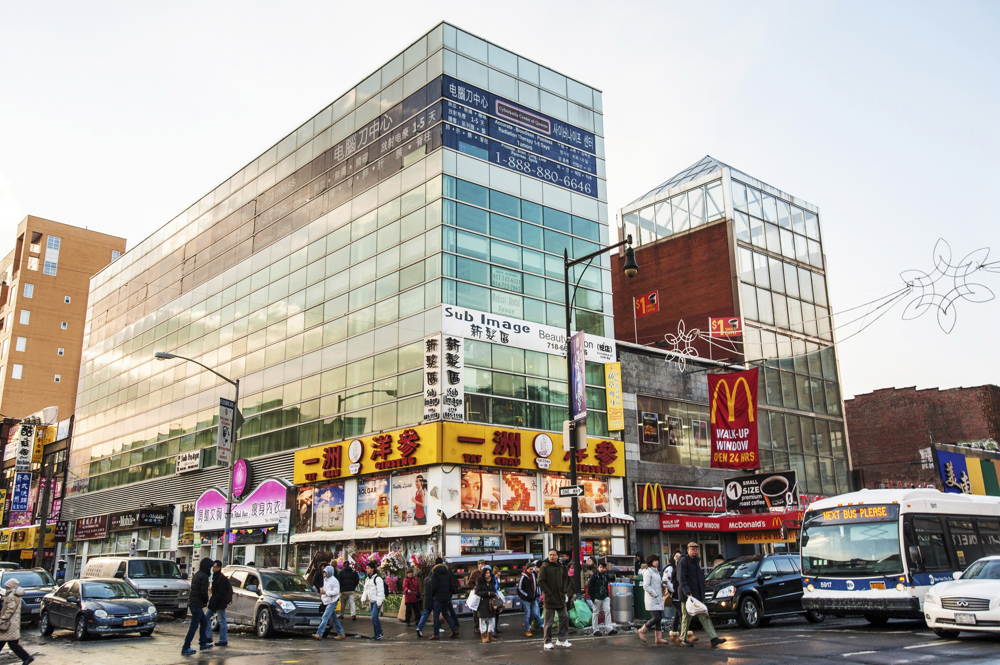
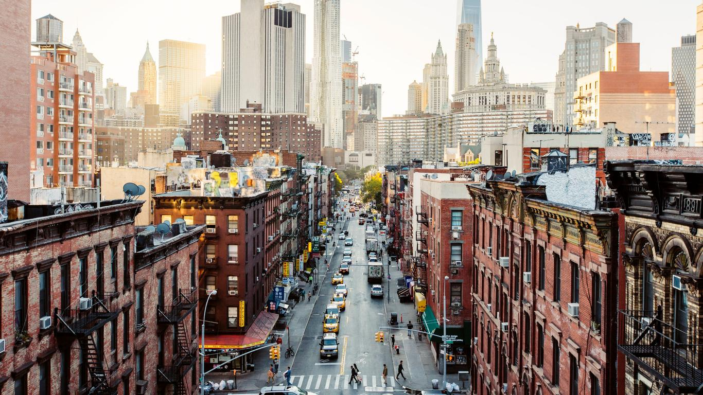

Flushing, Queens, although it's not Manhattan, is still my ultimate top favorite place to hang out in NYC! Not only do I feel connected to my background here because it's a Chinese location, but there are so many bright, fun arcades, and pretty cafes to chill out in. They have amazing food too, from small family run stalls, to a whole food court of food to choose from, from meat skewers to noodles to desserts. And if you're older, you don't have to go there just for the games and fun, but there is a lot of grocery shopping that goes on too! My entire family tells me if they were given the opportunity, they would love to move to Flushing, since we're holed up in Manhattan.

Soho, Manhattan, is my next favorite place to hang out, this time in Manhattan, but coming behind Flushing as a favorite. Although there aren't as many arcades or pretty cafe's as Flushing, it's definitely more of a hub for shopping, particularly clothes and plushies. I love the timey feel of the cobblestone streets in Soho! Some of my favorite stores in Soho is Uniqlo, Miniso, and Muji.

The Lower East Side holds the most memories for me, there's so many places I grew up on here! Firstly, my apartment where I've lived my whole life is here. But growing up, I always went shopping with my grandma in most memorably, Union Square (14 st) and Chinatown, where we most convienently shop for our groceries! I have also attended elementary school, and now high school in the Lower East Side.
